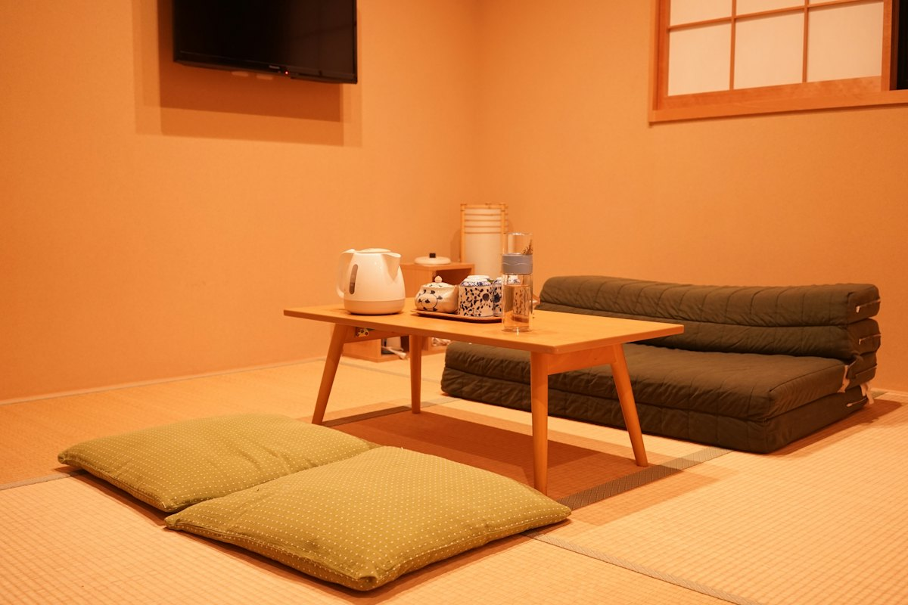
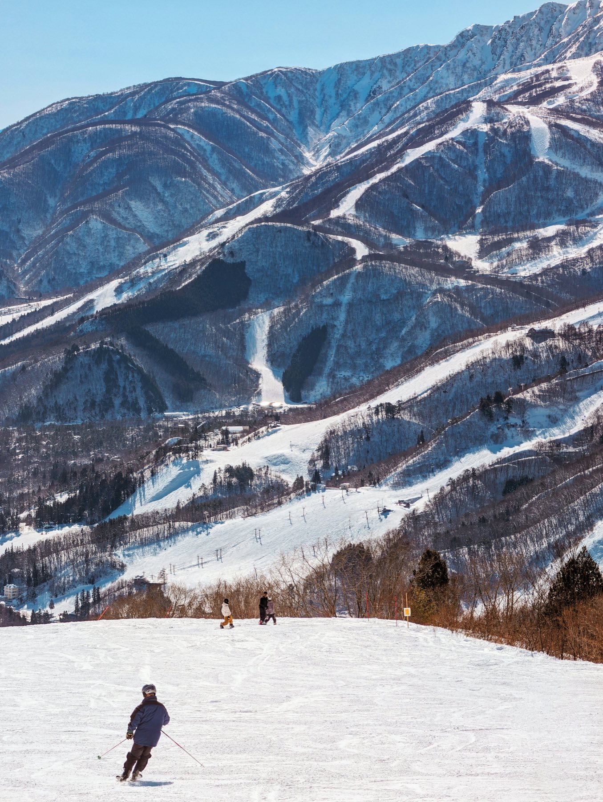
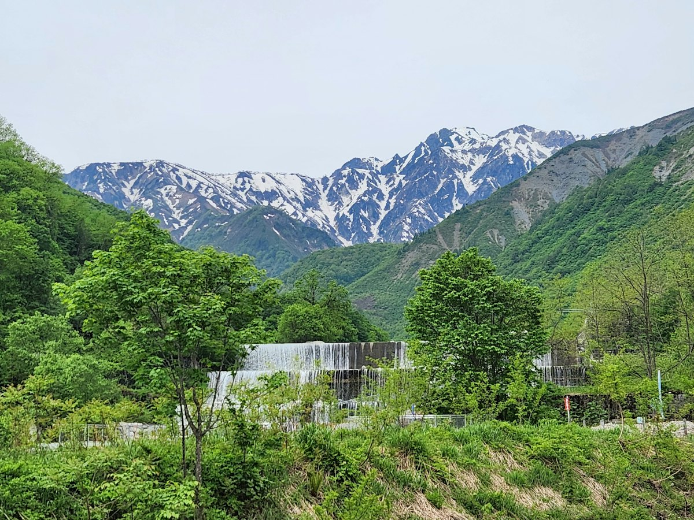
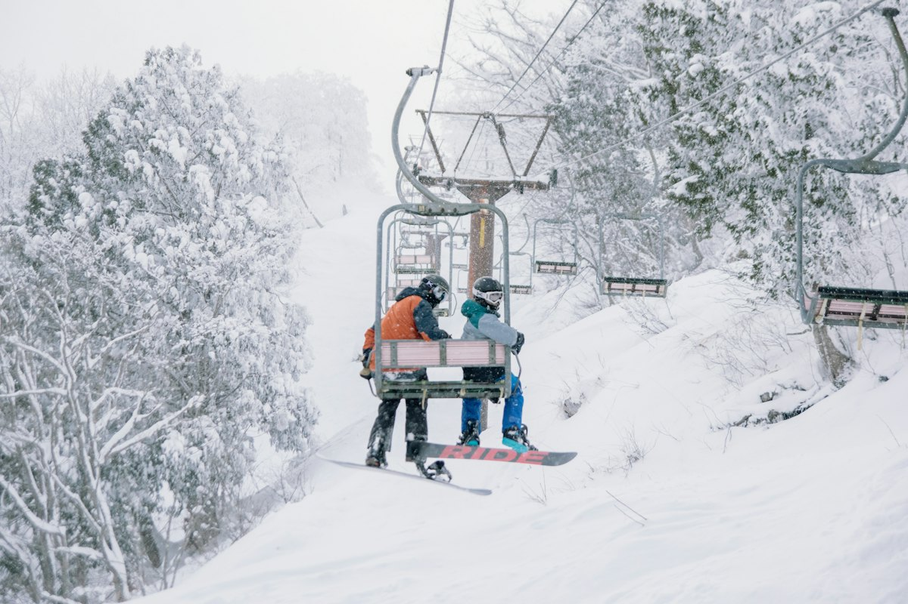
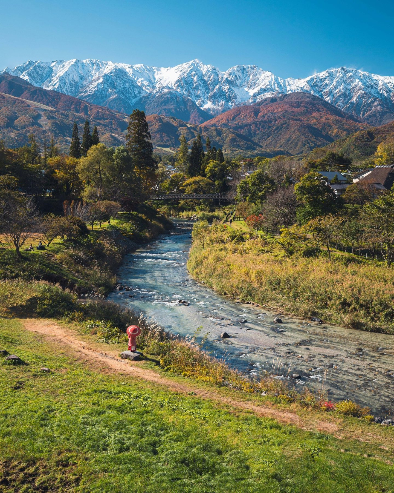

和室 6帖〜13帖
冷蔵庫・テレビ・無線LANインターネットあり。

温泉民宿 長野県白馬村・八方
観光、ウインタースポーツ、ビジネスなど、気軽に泊まれる、気軽に利用できる民宿です。早朝・夜中の到着でも大丈夫。ご予約時にご相談ください。
白馬の季節
夏
緑の山並み。お米は、あさひや産のあきたこまちです。
山並みの3Dイメージです。実際の地形とは異なります
スキーやスノーボード、アクティビティのあとは、24時間入浴できる八方温泉でリフレッシュ。連日のウインタースポーツも、乾燥室があるので安心です。
白馬駅までの送迎、八方尾根スキー場（名木山ゲレンデ、ゴンドラ乗り場、国際第一リフト乗り場、咲花ゲレンデ）への送迎も行っています。

冷蔵庫・テレビ・無線LANインターネットあり。

お米はあさひや産のあきたこまち。手作りの料理で。

八方尾根スキー場の各乗り場まで。

税込。連泊や人数により、金額のご相談をお受けします。料金は現在のホームページの表示をもとにしています。
| ご予約 | メールかお電話で |
|---|---|
| 設備 | EV・PHV 2台まで充電できます |
ご予約・ご相談は、メールかお電話で気軽にどうぞ。